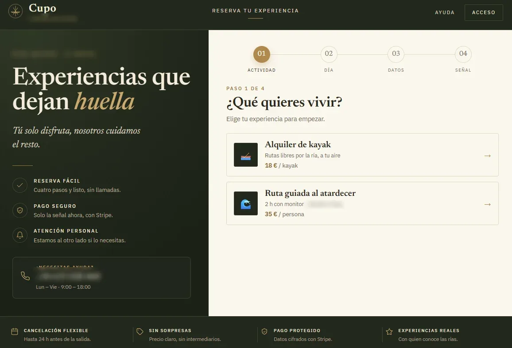
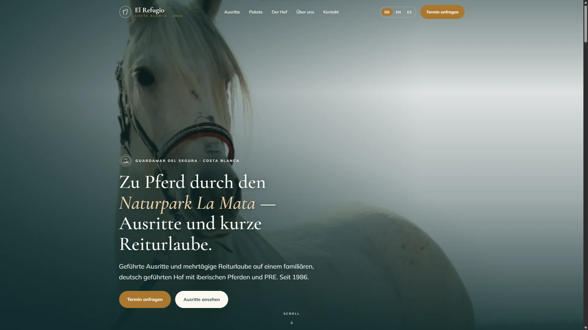
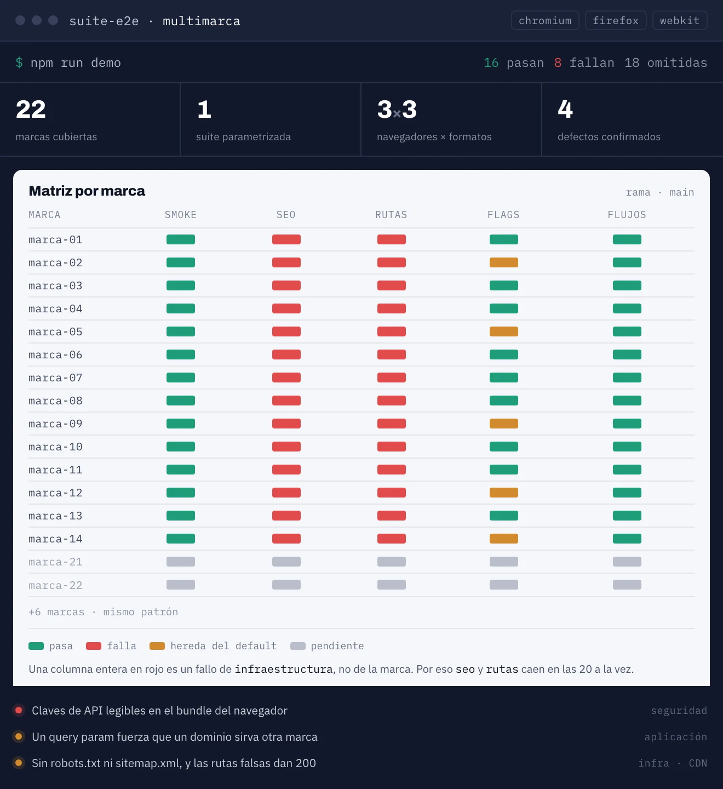

Todo el trabajo en una sola galería: webs y productos en producción con enlaces en vivo, junto a rediseños y propuestas — cada cosa dicha por lo que es. Gírala, arrástrala y haz clic en cualquier tarjeta; dentro está DomesLab, el proyecto insignia.



Ha sabido entender muy bien nuestras ideas desde el principio y convertirlas en una web que refleja perfectamente la esencia de Calniu, incluso mejor de lo que imaginábamos. Durante todo el proceso ha estado implicado, aportando su criterio y acompañándonos de forma cercana hasta conseguir un resultado con el que estamos muy contentos.Lina · equipo de Cal Niu
Cuéntame qué necesita tu equipo o tus clientes. En menos de 48 horas te respondo con un diagnóstico, una estimación de alcance y la siguiente decisión.
Cuéntame tu problema